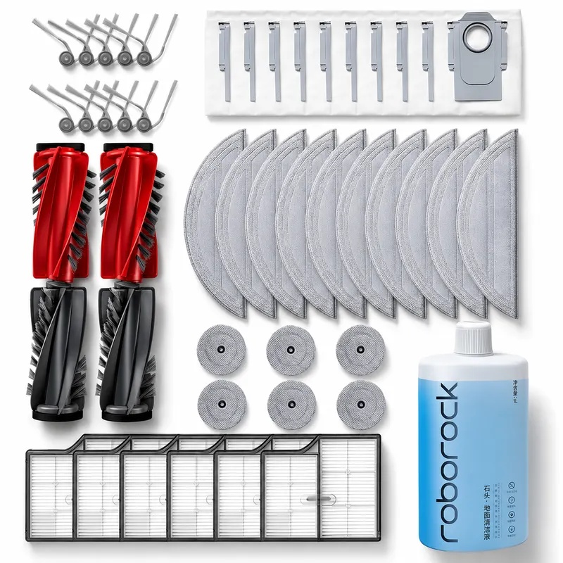

로보락 (Roborock)
로보락 S9 MaxV Ultra 3개월·6개월·1년 세트, 남은 여분으로 고르는 법
글·구성: 제이상점 · 기종별 1:1 호환 실물 점검 · 교체 주기 비교표 · 스마트스토어 패키지 안내

핵심 관리 · 선택 체크포인트
- S9 MaxV Ultra의 필터나 물걸레를 갈아 끼우려다
- 기본 세트 선택과 예비 품목 추가 흐름: S9 MaxV Ultra 상품 옵션은 크게 필수 기본 세트(9종)와 특정 소모품을 더 담는 추가 옵션으로 나뉩니다.
- 추가 옵션 금액은 필수 세트를 먼저 고른 뒤 더해지는 금액입니다. 필터 추가 수량 계산은 S9 MaxV Ultra 세트에 필터 4개를 더 추가하는 방법에서, 걸레·더스트백 묶음 비교는 따로 추가할 때와 묶음 가격 차이 안내에서 자세히 볼 수 있습니다.
- 메인 물걸레와 미니 걸레 위치도 함께 점검해요: 소모품을 교체할 때는 전원을 끄고 브러시 걸림과 필터 건조 상태를 먼저 확인하세요. 필요한 구성을 정했다면 S9 MaxV Ultra 3개월·6개월·1년 세트 및 세제 옵션에서 보유 기종과 수량을 대조해 보세요.
- 제이상점의 중국 구매대행·해외직배송 상품이므로 배송 여유 기간을 고려해 여분이 마지막 1개 남았을 때 미리 준비해 두면 편리합니다.
부품 규격 · 점검 기준표
| 점검 항목 | 확인할 옵션 구성 | 선택 포인트 |
|---|---|---|
| 필수 세트 (3개월·6개월·1년) | 기본 / 정품세제 업그레이드 / 세제 미포함 | 보유 세제 잔량과 전체 소모품 소진 속도에 맞춰 선택 |
| 필터만 빨리 줄어들 때 | 필수 세트 + 필터 4개 추가(+9,500원) | 물세척 후 24시간 건조하는 동안 교대로 쓸 여분 확보 |
| 걸레·더스트백이 함께 부족할 때 | 고급 걸레 10개 + 더스트백 10개 묶음(+44,900원) | 개별 추가 합계(50,000원) 대비 5,100원 낮은 묶음 구성 |
💡 교체 주기가 겹치는 필터·브러시·물걸레·더스트백은 단품 배송비를 여러 번 내기보다 로보락 S9 MaxV Ultra 기간별 세트(3개월·6개월·1년)로 미리 구비해 두면 물세척 후 24시간 교대 건조까지 끊김 없이 관리할 수 있습니다.
자주 묻는 질문 (FAQ)
Q. 로보락 S9 MaxV Ultra의 필수 세트 (3개월·6개월·1년) 규격과 관리 기준은 무엇인가요?
A. 기본 / 정품세제 업그레이드 / 세제 미포함 규격을 사용하며, 보유 세제 잔량과 전체 소모품 소진 속도에 맞춰 선택 기준으로 점검·교체하면 청소 효율을 안정적으로 유지할 수 있습니다.
Q. 로보락 S9 MaxV Ultra의 필터만 빨리 줄어들 때 규격과 관리 기준은 무엇인가요?
A. 필수 세트 + 필터 4개 추가(+9,500원) 규격을 사용하며, 물세척 후 24시간 건조하는 동안 교대로 쓸 여분 확보 기준으로 점검·교체하면 청소 효율을 안정적으로 유지할 수 있습니다.
Q. 로보락 S9 MaxV Ultra의 걸레·더스트백이 함께 부족할 때 규격과 관리 기준은 무엇인가요?
A. 고급 걸레 10개 + 더스트백 10개 묶음(+44,900원) 규격을 사용하며, 개별 추가 합계(50,000원) 대비 5,100원 낮은 묶음 구성 기준으로 점검·교체하면 청소 효율을 안정적으로 유지할 수 있습니다.
제이상점 1:1 검수 추천 패키지 · 구매 안내
☑️ 주문 전 확인해 두면 좋은 제이상점 안심 포인트
· 기종별 1:1 전용 규격 검수: 모델명·연식에 맞는 호환·정품 구성을 검수해 오주문 불안을 줄였습니다.
· 해외직배송 미리 주문 팁: 중국 구매대행·해외직배송 상품이므로 마지막 여분 1개를 꺼내 쓰는 시점에 개인통관고유부호와 함께 여유 있게 주문해 두시면 훨씬 경제적인 비용으로 끊김 없이 교체하실 수 있습니다.
· 기종별 1:1 전용 규격 검수: 모델명·연식에 맞는 호환·정품 구성을 검수해 오주문 불안을 줄였습니다.
· 해외직배송 미리 주문 팁: 중국 구매대행·해외직배송 상품이므로 마지막 여분 1개를 꺼내 쓰는 시점에 개인통관고유부호와 함께 여유 있게 주문해 두시면 훨씬 경제적인 비용으로 끊김 없이 교체하실 수 있습니다.
📖 더 많은 가정 내 사용 스토리와 상세 후기가 궁금하시다면
📱 네이버 블로그 모바일 원문 보기 ↗